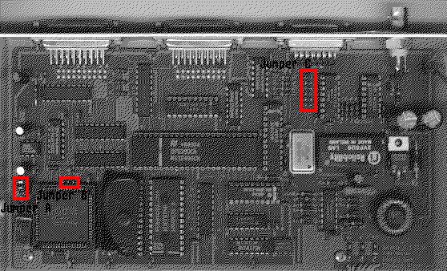

Previous
Next
TOC
Die Platinenversion 1.1 und 1.2 unterscheiden sich nicht von der Bau-
teilebestückung.

Die Platinenversion 1.1 und 1.2 unterscheiden sich nicht von der Bau-
teilebestückung.
Die Platine liegt so vor mir, daß die drei Leds zu mir zeigen und
alle Stecker/Buchsen von mir weg.
Der DMA-Knoten funktioniert entweder an der BNC-Buchse, oder am
AUI-
Anschluß. Um die Betriebsart zu ändern muß man Jumper ändern UND
einen Baustein ein- beziehungsweise ausbauen.
Für BNC-Buchse:
Das Jumperfeld (6 Stück) oben rechts muß leer sein.
Direkt rechts daneben muß ein Baustein (16Pol) eingebaut sein.
Oft steht drauf:
PE 64103
8946-S
Für
AUI Betrieb:
Jumper (alle 6) gesteckt und der Baustein muß entfernt werden.
Autoboot:
Unten links (ganz am Rand) ist ein Jumperfeld (JP1-1) mit drei Jum-
pern übereinander. Ist der obere nicht gesteckt, ist der Adapter
autobootfähig. Dann kommt immer eine Meldung wenn nicht die original
Bionet Software samt deren Server Software verwendet wird.
ACSI ID:
JP1-2 und JP1-3 sind für die ACSI ID zuständig, da die original Bionet
Software nur mit DMA-Knoten zurechtkommt, die auf ACSI ID3 stehen
sollte man hier nicht verändern.
weiterblättern
Kapitel Das Bionet 100 Netzwerk, Seite 2